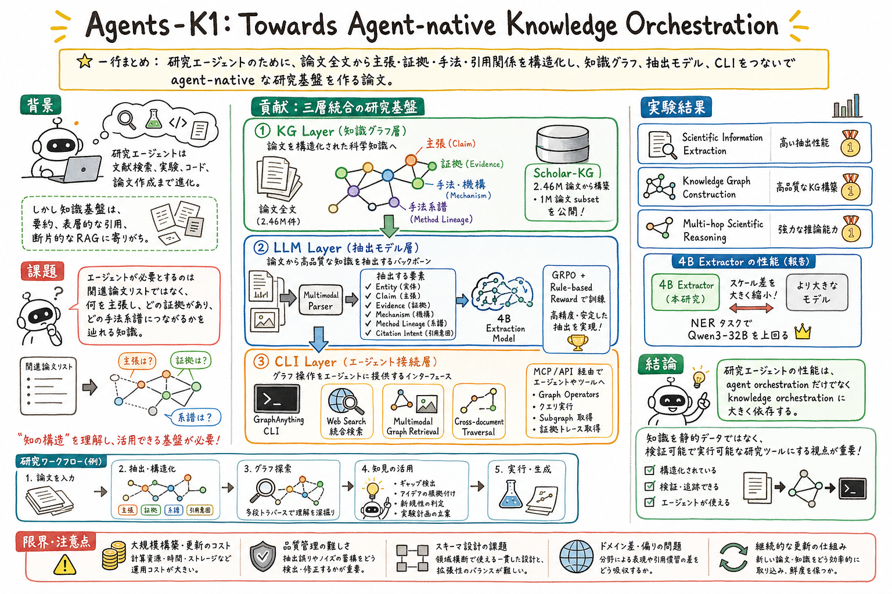

Agents-K1 は KG、LLM、CLI を一つの framework として扱い、論文 parsing、structured knowledge extraction、graph construction、agent-facing interface をつなぐ。

この論文の何がいいか
この論文は、paper-watch や論文要約の次の形を考える材料になる。論文を Markdown に要約して終わるのではなく、claim、evidence、method lineage、citation intent、gap を後で agent が使える構造として残す発想がある。
個人 AI assistant の wiki 運用にも近い。日次の候補選定、raw PDF、抽出テキスト、グラレコ、公開ページが増えるほど、単純な全文検索だけでは『どの主張がどの証拠に支えられているか』を辿りにくくなる。Agents-K1 はそこを knowledge orchestration として切り出す。
また、GraphAnything CLI のように、知識グラフを静的データではなく agent-facing interface にする視点がよい。読む、検索する、比較する、欠落を見つける、アイデアを grounded にする、という研究作業を tool surface として設計できる。
どんな論文か
研究エージェントは、文献検索、実験計画、コード実行、論文作成まで一つの loop で扱う方向へ進んでいる。しかし、そこに渡される知識基盤は、まだ abstracts、表層的な citation edge、単純な retrieval に寄りやすい。
Agents-K1 の問題意識は、研究エージェントに必要なのは関連論文リストではなく、各論文が何を主張し、その証拠がどこにあり、どの手法や先行研究の系譜につながるかを辿れる構造だという点にある。
この論文は、KG layer、LLM layer、CLI layer を統合する。論文全文から entity、claim、evidence、mechanism、method lineage、citation intent を抽出し、Scholar-KG を作り、4B extraction model を訓練し、GraphAnything CLI から agent が graph traversal や gap detection を実行できるようにする。
規模も大きい。2.46 million scientific papers から Scholar-KG を構築し、one-million-paper subset を公開すると説明している。単なる論文メタデータではなく、full paper を対象に multimodal evidence や typed relations を扱う点が特徴である。
読む価値は、agent orchestration だけでなく knowledge orchestration を設計対象に置くところにある。研究エージェントの性能を、どのモデルが考えるかだけでなく、どんな知識をどう構造化し、どう検証可能にたどれるかから見直せる。
Agents-K1 は、LLM-based research agents に必要な scientific knowledge infrastructure を作る論文である。対象は、単なる paper recommendation や abstract-level RAG ではない。
中心の主張は、研究エージェントには agent orchestration と同じくらい knowledge orchestration が必要だというもの。つまり、どの agent がどう動くかだけでなく、何を知識として渡し、どう構造化し、どう辿らせるかが性能を左右する。
そのために、Agents-K1 は Scholar-KG、4B information extraction model、GraphAnything CLI を統合する。raw papers を agent-native scientific knowledge graph に変換し、研究 agent がその graph を直接使える interface を提供する。
課題と貢献
Million-scale full-paper multimodal knowledge graph。2.46 million scientific papers から Scholar-KG を構築し、one-million-paper subset を公開すると説明している。対象は abstracts だけではなく full paper である。
4B parameter の information extraction model を GRPO と rule-based reward で訓練し、JSON validity、format compliance、task-conditioned F1 を見る。
web search、multimodal graph retrieval、cross-document traversal、gap detection、idea grounding、novelty judging などを agent が使える tool surface として提供する。
手法のしくみ
1
入力は scientific papers である。multimodal parser が論文本文、図表由来の evidence、citation context、metadata を読み、複数の view に分けて構造化する。
2
KG layer では、meta / factual entities、textually mentioned entities、implicit / abstracted entities、citation relationships、knowledge relations between entities を抽出し、scientific knowledge network を作る。
3
LLM layer では、4B extraction backbone を訓練する。GRPO と rule-based reward を使い、形式の正しさ、JSON validity、NER、relation extraction、long-form structured extraction の品質を押し上げる。
4
CLI layer では、GraphAnything CLI が graph を agent-facing interface に変える。web search、multimodal graph retrieval、knowledge network traversal を融合し、research agent が evidence trail を辿れるようにする。
5
Graph operators は、seed resolution、citation lineage reconstruction、comparative baseline retrieval、multimodal anchor retrieval、gap detection、idea grounding and novelty judging などを含む。
6
最終的には、idea-to-experiment pipeline に接続される。研究アイデアを既存知識に照らして refine し、method specification や code generation に進めるための基盤として設計されている。
検証結果
論文は、Agents-K1 が scientific information extraction、knowledge graph construction、multi-hop scientific reasoning で強い性能を示すと報告している。
2.46 million scientific papers across six subjects を処理し、one-million-paper subset を community research 向けに公開すると説明している。
情報抽出 backbone は、より大きい Qwen3-32B との scaling gap を大きく縮め、NER では Qwen3-32B を上回ると報告している。
GraphAnything CLI と graph traversal によって、関連論文の検索だけでなく、multi-hop scientific reasoning や verifiable knowledge tracing に接続する。
課題と議論
大規模 knowledge graph 構築にはコストがかかる。計算資源、ストレージ、更新頻度、品質管理の設計が必要になる。
Schema design は難しい。claim、evidence、mechanism、method lineage、citation intent をどう切るかは、分野や用途によって変わる。
Extraction quality が downstream に効く。誤った entity merge、relation extraction、citation intent が混ざると、agent の推論も汚れる。
公開 subset と full graph の扱い、ライセンス、再現性、更新差分の追跡は、実運用では重要な論点になる。
次に読むなら
- 今読むなら、まず Introduction と contributions を読む。agent orchestration と knowledge orchestration の切り分けが一番大事な入口になる。
- 次に §4 の KG layer を読む。どの種類の entity、claim、evidence、relation を graph にするのかを確認する。
- 実装目線では §6 の GraphAnything CLI を読む。静的な knowledge graph を agent-facing tool surface にする設計が見える。
- 関連して読むなら、Argus、Direct Corpus Interaction、Recursive Agent Harnesses、EurekAgent を並べると、evidence assembly、corpus interaction、harness recursion、environment engineering がつながる。
読後Q&A
この論文の中心問いは？
研究エージェントに必要な知識を、関連論文リストや抽象的な RAG ではなく、主張・証拠・手法系譜を辿れる agent-native knowledge graph としてどう構築するか。
agent orchestration と knowledge orchestration は何が違う？
agent orchestration は agent がどう計画し行動するか。knowledge orchestration は agent が使う知識をどう構造化し、検索し、検証可能に辿れるようにするか。
Agents-K1 の三層は何？
KG layer は論文から scientific knowledge graph を作る。LLM layer は情報抽出 backbone を訓練する。CLI layer は GraphAnything CLI で agent が graph を使えるようにする。
Scholar-KG は何が特徴？
abstract や citation metadata だけでなく、full paper から entity、claim、evidence、mechanism、method lineage、citation intent を構造化する点が特徴。
GraphAnything CLI は何をする？
web search、multimodal graph retrieval、cross-document traversal を統合し、seed resolution、citation lineage、baseline retrieval、gap detection、novelty judging などを agent-facing operation として提供する。
なぜ普通の RAG では足りない？
普通の RAG は関連文書や chunk を返しがちだが、研究エージェントには、どの claim がどの evidence に支えられ、どの method lineage につながるかを辿る必要がある。
実験で何を示している？
scientific information extraction、knowledge graph construction、multi-hop scientific reasoning で性能を示し、4B extractor がより大きいモデルとの gap を縮めると報告している。
個人 assistant 運用にどう効く？
論文メモを単なる要約ではなく、claim、evidence、method lineage、citation intent、gap として残す wiki schema を考える材料になる。
注意点は？
大規模 graph 構築のコスト、schema 設計、抽出品質、更新差分、分野ごとの差、ライセンスや再現性の扱いが実運用では課題になる。
次に読むなら何？
Argus、Direct Corpus Interaction、Recursive Agent Harnesses、EurekAgent を並べると、研究 agent の evidence、corpus、harness、environment の設計がつながる。